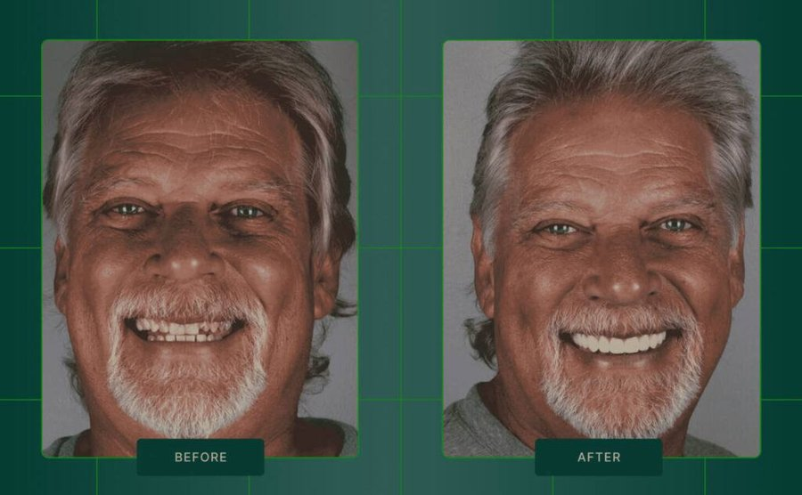
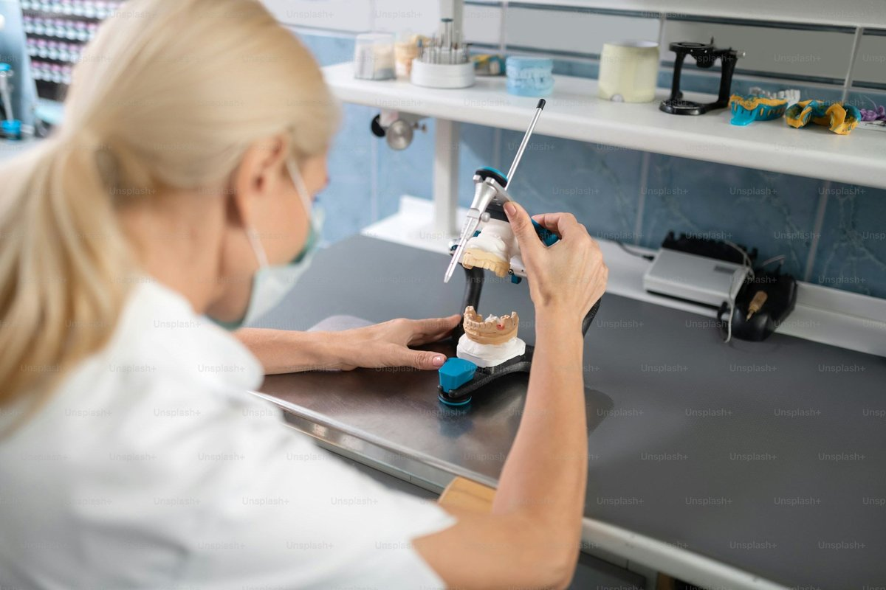
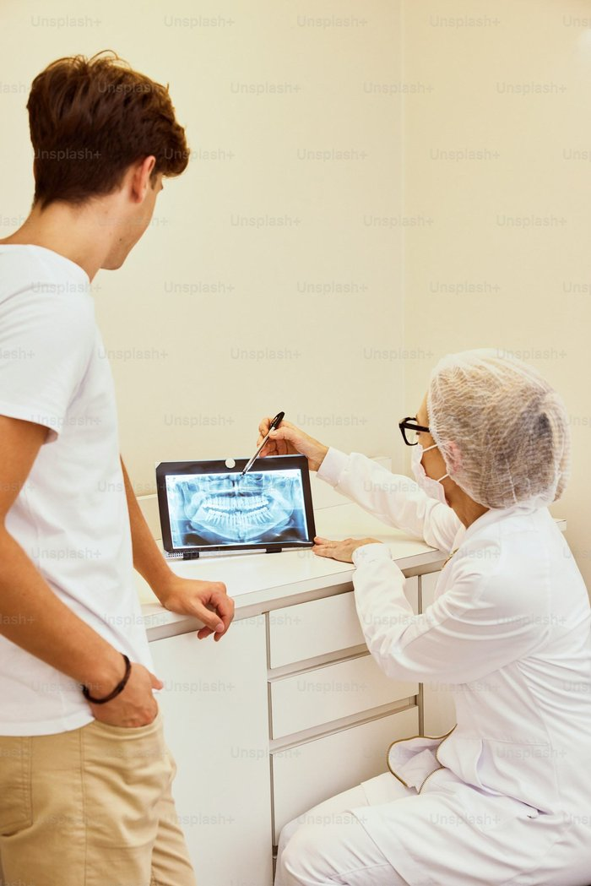
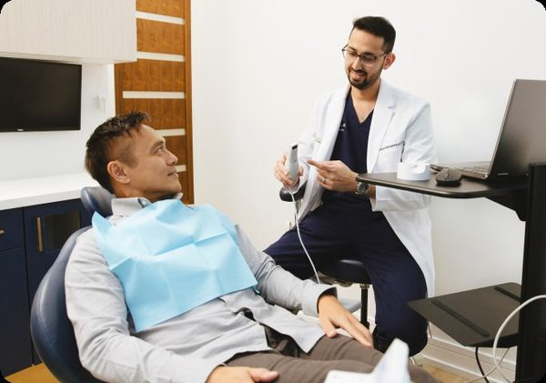
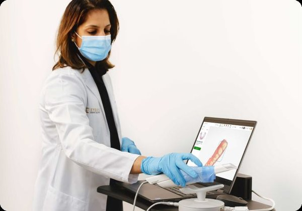
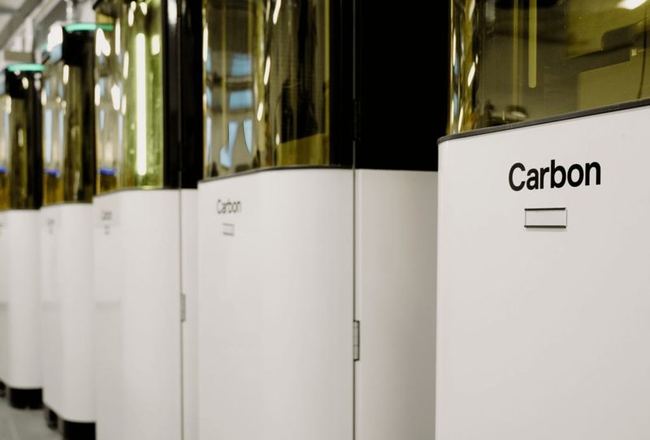
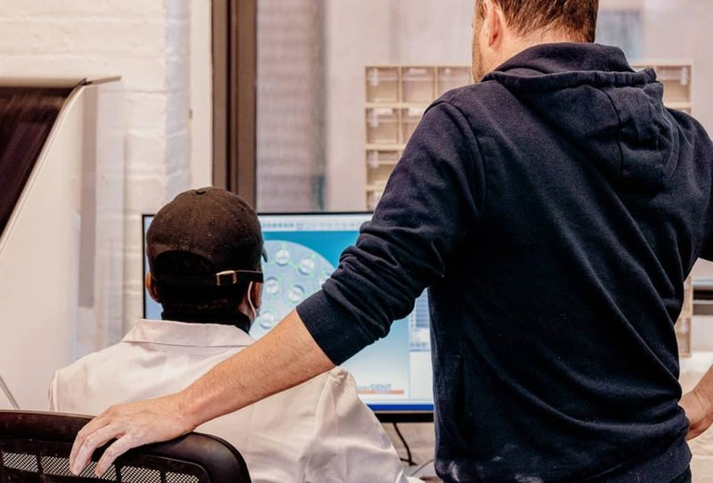

دراسة حالة: 10 وحدات لتحويل ابتسامة الزركونيا
نقدّم خدمات طب الأسنان الرقمية بأعلى مستوى من الجودة والدقة، مع إمكانية التواصل المباشر مع خبرائنا في الوقت الفعلي لضمان أفضل النتائج لمرضاك.

لا يمكن تحقيق ترميمات متسقة وملائمة إلا من خلال التواصل القوي. في لازورد ، قمنا بتطوير طرق مبتكرة للتعاون مع أطباء الأسنان لدينا باستخدام قوة التكنولوجيا لإعادة تعريف ما هو ممكن لكل مريض.

احصل على مراجعات المسح الفعلي واعتمد تصميمات الحالات ثلاثية الأبعاد للتحكم النهائي في عملك المختبري.

يمكنك الوصول إلى فنيينا ذوي المستوى العالمي الذين يتمتعون بأحدث تقنيات طب الأسنان وأوقات التسليم الرائدة في الصناعة.

قم بتقديم خدمات تغير قواعد اللعبة مثل التيجان لمدة 5 أيام، وأطقم الأسنان ذات الموعدين، والأجزاء الجزئية المباشرة حتى النهاية.

يمكنك الوصول إلى خبرائنا السريريين للحصول على إرشادات ودعم شخصيين عبر الهاتف أو الرسائل النصية أو البريد الإلكتروني أو الدردشة المباشرة خلال دقائق.
تقديم نتائج متوقعة للمرضى باستخدام التكنولوجيا والأدوات المبتكرة التي تمنحك التحكم النهائي.
قم بتنمية ممارستك من خلال الانتقال إلى سير العمل الرقمي باستخدام مجموعة أدوات طب الأسنان الرقمية المثبتة لدينا.
لا يمكن تحقيق ترميمات متسقة وملائمة إلا من خلال التواصل القوي. في لازورد، قمنا بتطوير طرق مبتكرة للتعاون مع أطباء الأسنان لدينا باستخدام قوة التكنولوجيا لإعادة تعريف ما هو ممكن لكل مريض.


استمتع بمستوى من التحكم لم يكن ممكناً من قبل.


اجعل مساعديك يقومون بالمسح بثقة لكل سير عمل رقمي - استفد من التدريب غير المحدود لفريقك كلما دعت الحاجة.

ارفع مستوى رعاية المرضى من خلال ابتكارات مثل أطقم الأسنان ذات الموعدين، والأجزاء الجزئية المباشرة إلى النهاية، والماسح الضوئي رقم 1 في طب الأسنان الترميمي.

استخدم أدوات المسح المتقدمة - تصور التصميمات الرقمية والموافقة عليها، وتعزيز قبول الحالة، وتقديم نتائج ناجحة للمرضى مع التحكم المطلق.
قم بتطوير ممارساتك مع لازورد - الشريك الرقمي الوحيد المتكامل وقم بتحسين تجربة المريض والحلول السريرية ونمو الأعمال.

داخل معمل لازورد للمستقبل

كيف يعمل لازورد

دراسة حالة: 10 وحدات لتحويل ابتسامة الزركونيا
لا! نوفر لك حاسب المسح الضوئي 3Shape TRIOS مجاناً بالكامل. كل ما تحتاجه هو التسجيل معنا والبدء في إرسال طبعاتك الرقمية فوراً.
يمكنك التواصل معنا عبر الهاتف، البريد الإلكتروني، الرسائل النصية، أو الدردشة المباشرة — نحن متاحون خلال دقائق للإجابة على استفساراتك.
نقدم طيفاً واسعاً من المنتجات تشمل: التيجان والجسور، الأسنان الجزئية الرقمية والمعدنية، الأطقم الكاملة، الأجهزة التقويمية، الأطباق الليلية، وغيرها الكثير.
نعم بالتأكيد! نتيح لك مراجعة جميع التصاميم الرقمية في الوقت الفعلي وإجراء أي تعديلات قبل بدء التنفيذ، لضمان الحصول على النتيجة المثلى.